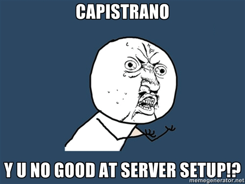

E
Teaching your team to cook with
chef
Today's Menu
Appetizers
Chef Primer
Do's and don'ts with a side of gotchas
Entrees
chef_cap
brewstrap
A Quick Chef Primer
Chef?
Chef is an open-source systems integration framework built specifically for automating the cloud. No matter how complex the realities of your business, Chef makes it easy to deploy servers and scale applications throughout your entire infrastructure. Because it combines the fundamental elements of configuration management and service oriented architectures with the full power of Ruby, Chef makes it easy to create an elegant, fully automated infrastructure.
http://www.opscode.com/chef/
Translation
Blah blah blah. Automate stuff.
I configure my servers manually
LIKE A BOSS

Automation made easier
JSON ✓
Configuration and customize the recipes for a particular app, environment etc.
Ruby ✓
Commands, packages, shell scripts, cronjobs etc.
Chef in One Slide
// node.json
{
"myapp" {
"repository": "http://example.com/myapp.git"
},
"run_list": ["mysql", "myrailsapp::deploy"]
}
# cookbooks/mysql/default.rb
package "mysql" do
action :install
end
execute "create-my-database" do
not_if "mysql -e 'show databases' | grep myapp"
command "mysqladmin create myapp"
end
# cookbooks/myrailsapp/deploy.rb
deploy "myrailsapp" do
repository node["myapp"]["repository"]
deploy_to "/apps/myapp"
end
The only link you must remember
This is the single most important page of documentation:
http://wiki.opscode.com/display/chef/Resources
Which Chef... solo? server? sous?
Chef Solo Only
Why not chef server?
Do's and don'ts with a side of gotchas
Do's & Dont's
Use attributes not constants!
Good!
# cookbooks/myapp/attributes/default.rb
default[:user][:home] = ENV["HOME"]
# cookbooks/myapp/recipes/default.rb
execute "something" do
cwd node[:user][:home]
command "echo hello world"
end
Do's & Dont's
Use attributes not constants!
Bad!
# cookbooks/myapp/recipes/default.rb
USER_HOME = ENV["HOME"]
execute "something" do
cwd USER_HOME
command "echo hello world"
end
You make it harder for the value to be overridden in the JSON configuration.
Do's & Dont's
Use definitions NOT global methods
Good!
# cookbooks/osx/definitions/homebrew.rb
define :homebrew do
action = params[:action] || "install"
package = params[:package] || params[:name]
execute "homebrew-#{action}-#{package}" do
not_if params[:not_if] if params[:not_if]
only_if params[:only_if] if params[:only_if]
cwd params[:cwd] if params[:cwd]
command "brew #{action} #{package}"
user params[:user] if params[:user]
end
end
# cookbooks/myapp/recipes/default.rb
homebrew "mysql" do
not_if "test -e /usr/local/bin/mysql"
end
Do's & Dont's
Use definitions NOT global methods
Bad!
# cookbooks/osx/libraries/homebrew.rb
class Chef::Recipe
def homebrew(package, action="install", force=false)
execute "brew #{action} #{package}" do
command "brew #{action} #{package}"
not_if { force }
end
end
end
# cookbooks/myapp/recipes/default.rb
homebrew "mysql", "install", true
Do's & Dont's
Use definitions NOT global methods
- Doesn't look very 'chef' like does it?
- Your method will be horribly complicated to be full featured
- Watch what happens when we convert the definition to a LWRP
Do's & Dont's
Prefer LWRP over Definitions
# cookbooks/osx/resources/homebrew.rb
actions :install, :uninstall
attribute :action, :default => :install
action :install do
execute "install" do
command "brew install #{new_resource.name}"
end
end
# cookbooks/myapp/recipes/default.rb
homebrew "mysql" do
not_if "test -e /usr/local/bin/mysql"
end
Notice how the recipe implementation didn't change?
Gotcha: Stacktraces
Stacktraces will be large and messy. Learn to pay attention to what matters
Example error
Gotcha: Compilation vs Execution
Chef has 2 phases. Compilation & Execution
You will get bitten by this fact
Gotcha: Compilation vs Execution
This code fails to account for this:
# libraries/marker.rb
class Chef::Recipe
def run_unless_marker_file_exists(marker_file_name)
...
end
end
# cookbooks/foo/recipes/bar.rb
run_unless_marker_file_exists "foobar_marker" do
execute "this will never run if foobar_marker exists at time of compilation" do
...
end
end
Gotcha: Compilation vs Execution
The safe solution is to use notifies, subscriptions and not_if, only_if blocks
# cookbooks/foo/recipes/bar.rb
execute "this will run if notified exists at time of execution" do
action :nothing
command "dosomething"
subscribes :run, "execute[run_all_foobar_dependencies]", :immediately
end
execute "run_all_foobar_dependencies" do
action :nothing
command "true"
end
Gotcha: More
- Know your POSIX exit codes! (Any non-zero == error)
- You're likely running as root. Remember to use "user 'myuser'" often.
- Always use debug mode and put up with the noise
- When using 'notifies' may need to use ':immediately'
- Names of resources matter! They need to be unique... *across* all cookbooks
chef_cap
History of chef_cap
Large existing production app with:
- many, many environments to deploy to
- complex deployment, lots of moving parts
- split across dedicated servers and a cloud based deployment system that under the hood used chef
- existing deployment was a pile of YAML, capistrano tasks and partially 'chefized' for the cloud stuff
The fundamental problem
The solution
chef-solo + capistrano = chef_cap
- Well tested (and TDD'ing capistrano is not easy)
- 100% compatible with existing capistrano tasks and plugins
- You can slowly convert your deployment over to it if you needed to
- and it's on github (Thanks CaseCommons)
Demo
brewstrap
The problem
You hired a new developer and gave them a shiny new laptop
They then spend the next 2 days setting up their development environment
The problem
You have a team of developers around the world and now your app has a new dependency
Emails are sent. Calls are made. Commits are reverted.
All the developers spend various hours getting it working in their own way.
The solution
$ curl http://git.io/PvkgGw > /tmp/brewstrap.sh && bash /tmp/brewstrap.sh
on github
Why another tool like this?
Homebrew
$ /usr/bin/ruby -e "$(curl -fsSL https://raw.github.com/gist/323731)"
RVM
$ bash -s stable < <(curl -s https://raw.github.com/wayneeseguin/rvm/master/binscripts/rvm-installer)
Brewstrap
$ curl http://git.io/PvkgGw > /tmp/brewstrap.sh && bash /tmp/brewstrap.sh
brewstrap
To get your OSX development environment up and running quickly. To keep your development team in sync with your development environment.
Demo
The End
. . .. . . .. . .